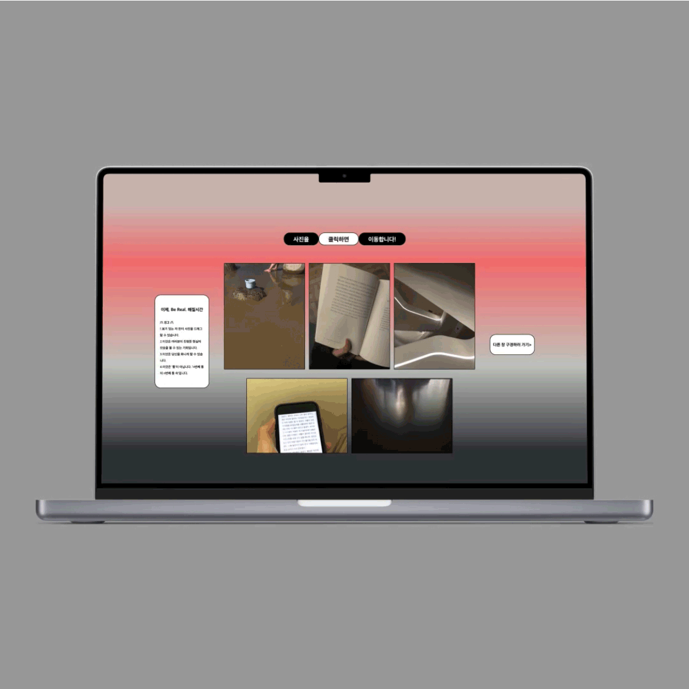
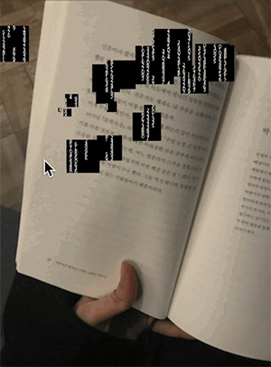

<\뇌/>~므, 2023
웹 , 다중매체.


<\뇌/~므>는 chans(전시은, 안재민, 최지현)가 ‘통 속의 뇌’라는 이론을 바탕으로
제작한 인터랙션 아트이다. 우리는 디지털 화면들을 ‘통’ 속에 갇힌 인간이 조종하는
‘통 속의 통’이라고 규정하고 현실에서 무한히 반복되는 ‘통 속의 통’ 개념을 중첩되는
화면들과 각종 인터랙션(P5.js)을 통해 시각화했다. 첫번째 통을 담은 안재민의 세계는
‘일상 속 텍스트’라는 주제를 가진다. 일상 사진들을 클릭한 채 드래그하면 디지털 코드
문자들이 나온다. 이는 우리가 사는 세상이 사실 통 속의 뇌 즉 ‘컴퓨터의 전기 신호로
이루어진 세계’라는 개념을 직접적으로 드러낸다. 마우스의 드래그 방향에 따라 현실 속
요소들이 디지털 문자로 변환되는 과정을 통해 관람객은 지금까지 자신이 가지고 있지 못했던
‘통 속 현실을 알아볼 수 있는 주도권’을 가지게 된다.
첫번째 통의 웹 개발과 디자인, 크리에이티브 코딩, 개별 세부 페이지 웹디자인 참여했으며
웹의 전반적 디자인은 솔직한 모습을 보여주는 SNS 어플‘*BeReal’의 인터페이스 요소를
<\뇌/~므>웹의 전체적인 테마에 적용했는데, 이는 ‘진짜다움’ 즉 *BeReal이 추구하고자
하는 가치(‘Real’)가 사실 통 속을 벗어난 곳에 절대적으로 존재하는것은 아닐까 생각해보게
하고자 했다. PROTO의 <이상공간(2023.8.28-9.8)>에서 전시했다.
<\Brain/~~므> is an interaction art produced by chans
(Sieun Jeon, Ahn Jaemin, Choi Jihyun) based on the theory of
'Brain in a vat, BIV'. We define digital screens as 'Brain in a vat, BIV'
controlled by humans trapped in a 'vat' and visualize the concept
of 'vat in a vat' that repeats infinitely in reality through
overlapping screens and various interactions (P5.js). An Jaemin's
world containing the first vat has the theme of 'text in everyday
life'. Click and drag everyday photos to get digital code characters.
This directly reveals the concept that the world we live in is
actually a brain in a vat, that is, a 'world made up of
electrical signals from computers'. Through the process of
converting elements in reality into digital characters
according to the mouse's drag direction, visitors have the
initiative to recognize the reality in the vat that they
have not had until now.